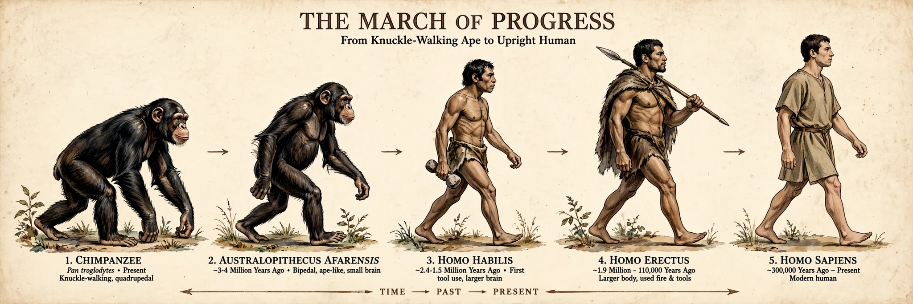

Human evolution
From Wikipedia, the free encyclopedia

Human evolution is the evolutionary process within the history of primates that led to the emergence of Homo sapiens as a distinct species of the hominid family, which includes all the great apes. The human lineage diverged from that of chimpanzees roughly 6–7 million years ago in Africa; upright walking preceded large brains by millions of years, and anatomically modern humans appeared by about 300,000 years ago.
Early hominins
Candidate early hominins include Sahelanthropus (c. 7 Ma), Orrorin and Ardipithecus (4.4 Ma), whose skeleton shows a mosaic of climbing and walking. The australopithecines (4–2 Ma) — Australopithecus afarensis ('Lucy'), A. africanus (the Taung Child) and the robust Paranthropus — were habitual bipeds with ape-sized brains, making stone tools by 3.3 Ma (Lomekwi) or 2.6 Ma (Oldowan).
The genus Homo
Homo habilis and Homo erectus (from c. 2 Ma) mark larger brains, smaller teeth and eventually fire and the Acheulean handaxe; H. erectus spread across Eurasia. Archaic humans — Neanderthals in Europe and western Asia, Denisovans in Asia, H. heidelbergensis — interbred with early H. sapiens, leaving 1–4% Neanderthal ancestry in most non-African genomes today.
Modern humans
The oldest H. sapiens fossils come from Jebel Irhoud, Morocco (c. 300,000 years). Behavioural modernity — art, ornaments, long-distance exchange — accumulated over the following 200,000 years. A major dispersal out of Africa around 60,000–70,000 years ago populated the world, reaching Australia by ~65,000–50,000 years ago and the Americas by at least ~15,000–23,000 years ago, replacing or absorbing all other hominins.